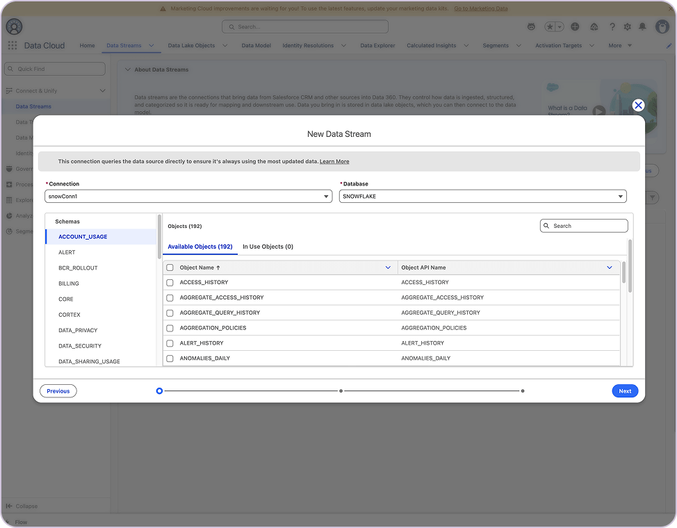
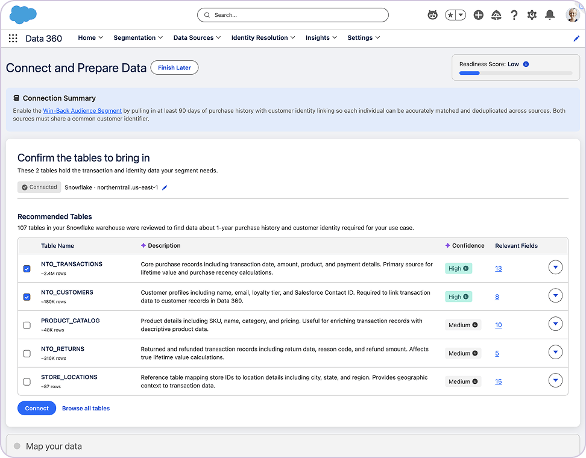
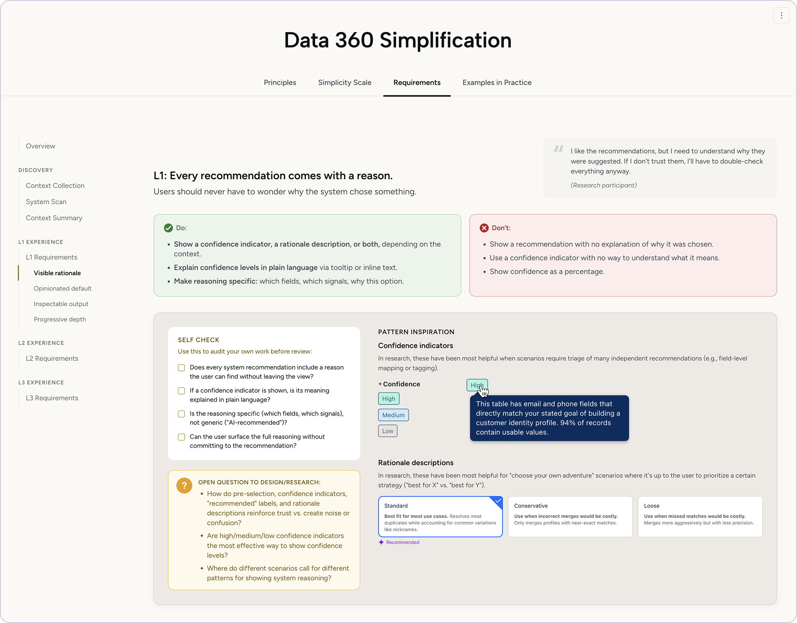
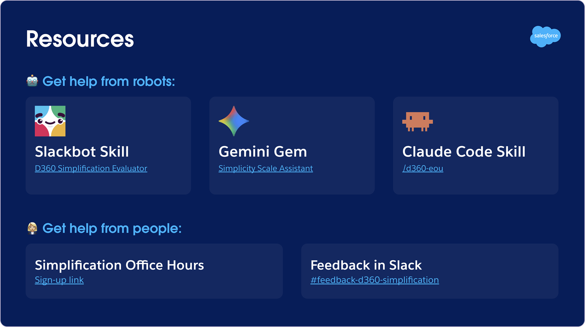

Salesforce Data 360 Simplification
The Problem
Data 360's ease-of-use audit score was rated unacceptable across core workflows. Only a fraction of users could finish the tasks the product was built for, and getting there was slow.
14.24%
Ease-of-use score
22%
Task completion on core workflow
8.4 min
Worst average load time on core feature
Our org's charter was to be bolder on simplicity. My job was to define what that actually meant across a complex, multi-team product, then make it stick.
The Solution
Data 360 needed to get simpler across more feature areas and teams than any one designer could reach, so I led the work to define what "simple" meant and built the system that let teams apply it themselves.
22% 86%
Task completion on the core ingest-to-activate workflow in usability testing
| What I Did | Impact | |
|---|---|---|
| Defined what ‘simple’ actually means | Six experience principles and a three-level simplicity scale that gave product, design, and engineering the same basis for any user-facing decision | Adopted org-wide as the criteria for evaluating user-facing work |
| Wrote and prototyped a steel thread | An end-to-end narrative that turned the principles into a specific product experience, following two personas with opposite needs | Informed pattern guidelines and enablement materials, gave the org a concrete picture of ‘simple’ to work towards |
| Enabled teams to build simpler experiences | Enablement site, pattern guidelines, and AI evaluation tooling | Task completion on the core tested workflow went from 22% to 86% |
The Team
Partners from strategy through delivery
Core collaborators: Director of Product Management · Lead UX Designer · Principal Researcher · Principal CX Designer · Engineering Architect
Key stakeholders: SVP of Product Management, VP of UX
Wrote and prototyped a steel thread
We needed to show what a simplified experience actually felt like end to end, for the users the product was failing most. Writing it out was also the first real test of the frameworks: a principle that sounds right in a doc can fall apart the moment it meets an actual workflow.
The narrative followed two personas with opposite needs: Amy, a non-technical marketing ops lead, and her data architect Seth. Every step paired what the user sees with what the system is doing, the principle it activates, its simplicity level, and the research behind it. If the frameworks could hold for both users, they could hold anywhere.
CHALLENGE
Complexity compounded in two directions
The steel thread accumulated stakeholder input until it drifted from the simple vision it started with. At the same time, a parallel workstream was diverging into overlapping UI. Neither had a clear owner.
I named the drift plainly enough to pull the narrative back toward its original boldness, and proposed a hub-and-spoke model that framed each workstream's contribution so teams could move without waiting for top-down direction.
The thread ran the full ingest-to-activate journey: pull data into Data 360, map and model it, build a segment, and activate it for marketing. The old experience made users assemble each stage by hand across scattered tabs, in product-specific terms no one arrived already knowing. I redesigned it around recommendation: the system reads what it can already see, proposes a path through each stage, and lets users review and adjust instead of building from nothing.


Testing on this prototype, plus research from parallel simplification work, became the basis for the pattern guidelines and enablement materials. The narrative made the argument; the patterns made it executable.
Made the framework executable
One designer can't cover six feature areas, and rigid specs would have broken across the range of workflows and personas our teams had to support. The answer was to build the system other teams execute against, not the screens.
CHALLENGE
Principled enough to generalize, concrete enough to use
A framework abstract enough to apply across six feature areas risks being too vague for any team to act on. Make it concrete enough to act on and it stops being a system, just a spec for one feature.
I worked the framework from both ends: narrative to prototype to research-validated patterns, pulling toward the specific, then back out to what generalized. I resolved it by writing pattern guidelines for each level of the simplicity scale, concrete enough for teams to act on, structured enough to hold across the product.
My design partner and I vibe-coded an enablement microsite, which hosts our simplification framework and pattern guidelines built from the steel thread testing and parallel research.

I also authored evaluation tooling that scores any PRD or prototype against the framework, delivered through the tools teams already used: a Slackbot skill, an existing Claude skill for D360 simplification, and a Gemini Gem.

What changed
22% 86%
Task completion on the core ingest-to-activate workflow
90% completion on new segmentation and activation flows
94% completion on agent-ready data preparation flows
These improvements are a direct result of feature teams applying our simplification framework and pattern guidelines. Feedback from those teams flows back into the enablement materials.
Process wins
- Experience principles and simplification framework operationalized across the Data 360 product, design, and engineering org
- Usability testing cycle shortened from ~4 weeks to 3 to 5 days, and scaled beyond the central team so testing before shipping is now a norm
- Teams began blocking GA releases when new experiences didn't meet simplicity expectations. Three high-priority blockers were caught in the first release after the enablement materials shipped
The framework now runs beyond the central team: dedicated pods are simplifying D360's highest-value workflows, all building on the same patterns, framework, and tools.